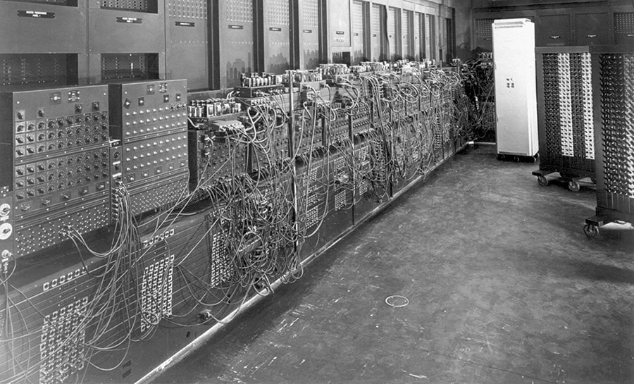
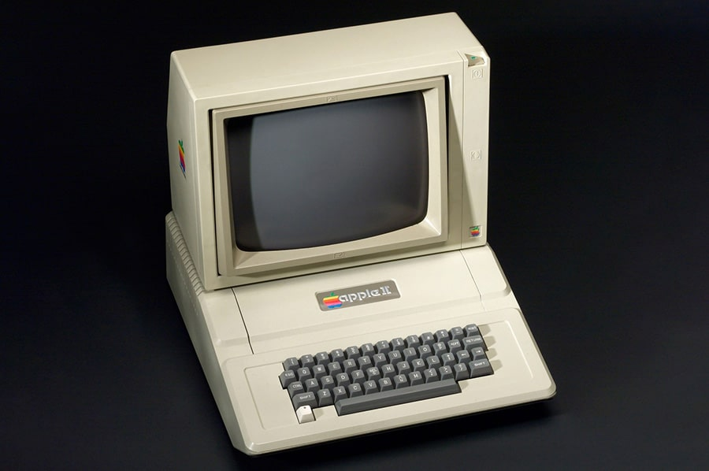
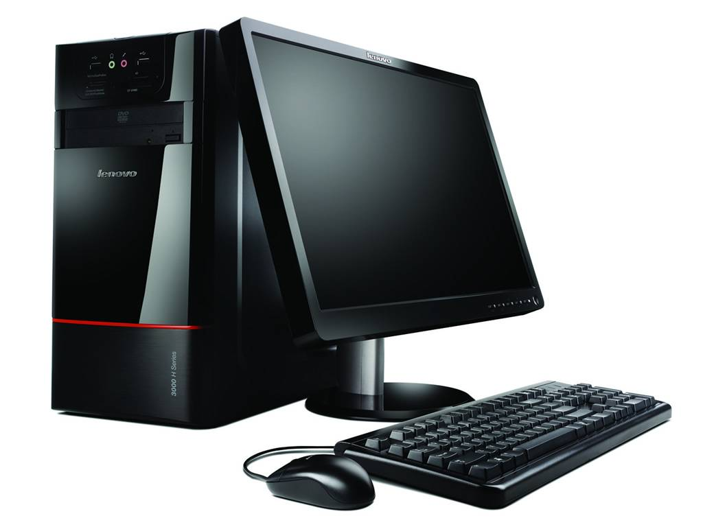

Эпоху достаточно примитивных компьютеров прерывают первые ЭВМ, создание которых началось с 30-х годов на основе электронных ламп и реле. Это были громоздкие, неудобные в использовании, но прогрессивные для своего времени, компьютеры. Цена такого изобретения кусалась, поэтому позволить себе приобрести такую "штуку" могли только крупные корпорации и правительства некоторых стран 
В 60-х годах произошел очередной виток в развитии - история компьютера перешла на второе поколение ЭВМ. Послужило этому изобретение транзистора – первого полупроводника, заменяющего электронную лампу. Габариты такого компьютера значительно уменьшились. Увеличилась производительность – от сотен тысяч до 1 млн. операций в секунду. Память компьютера составляла несколько десятков тысяч слов, оперативка достигала до 32 Кбайт. Благодаря транзисторному компьютеру начинается развитие языков программирования высокого уровня. Изобретение транзистора поспособствовало настоящему всплеску в развитии компьютера. В различных странах - США, СССР, Англии, Франции, Японии - разрабатывают свои, все более совершенные вычислительные машины. Появляются устройства внешней памяти, устройства для ввода/вывода, многопроцессорная обработка и менее значимые структурные изменения компьютера.
Период с конца 60-х и до конца 70-х история создания компьютера относит к эпохе интегральных схем. Их появление
позволило сделать серьёзный прыжок в развитии вычислительной техники – весь этот период именуют третьим поколением компьютеров.
Возможность интегрировать в одну микросхему несколько полупроводниковых приборов позволило тогдашнему компьютеру значительно приблизиться к тому ПК,
который мы знаем сегодня.
Компьютер значительно уменьшился в размере – его можно было с легкостью поставить на стол.
Производительность увеличена до миллионов операций в секунду.
За счет создания микросхем гораздо упростилась не только эксплуатация компьютера, но и его ремонт.
Машины третьего поколения были программно-совместимыми между собой, так как имели общую архитектуру.
Компьютер мог выполнять несколько задач одновременно.
В качестве внешних запоминающих устройств используются магнитные диски, которые работают гораздо быстрее своих предшественниц - магнитных лент.
Лидер по производству компьютеров IBM к началу 70-х выпустил более 20 различных моделей ЭВМ. В одной из последних разработок этого времени впервые
появляется кэш-память. Над улучшением разработок многие страны объединяют усилия и подписывают соглашение о сотрудничестве в области
вычислительной техники.
В 70-е годы компьютер, наконец, стал персональным и доступным – начался период, который история создания компьютера кратко обозначает как "четвертое поколение ЭВМ". Возникновение этой ступени развития компьютера стало возможным благодаря созданию компанией Intel первого микропроцессора. Вычислительная техника получила большое преимущество и начала быстро апгрейдиться – с каждым годом компьютеры становились все мощнее и компактнее. История появления компьютера нового поколения началась с того, что японская компания Busicom заказала у американской корпорации Intel 12 микросхем для калькуляторов. Устройства были разных моделей и для каждого требовалась своя микросхема, но заморачиваться над маленьким заказом с созданием разных микросхем специалисты Intel не стали. Они просто сделали универсальный микропроцессор, который подошел бы в любое из устройств. Это стало толчком к тому, чтобы в 1972 году был создан более сложный 8-разрядный микропроцессор, который был использован уже в компьютерах.акую "штуку" могли только крупные корпорации и правительства некоторых стран
Во второй половине 70-х годов развитие компьютеров достигло того момента, когда создание компьютера, доступного каждому, перестало быть проблемой. Но разработали его вовсе не крупные корпорации и мировые гиганты в производстве техники, а два студента - Стивен Джобс и Стив Возняк. Работали энтузиасты в гараже, создав там "Клуб самодельных компьютеров", который позже превратится в корпорацию "Apple Computer". Это был первый компьютер, нацеленный на простых покупателей, а не на программистов – ПК не надо было собирать самому, он продавался в полностью готовом к использованию виде. Идея персонального компьютера была настолько успешной, а товар востребованным, что ее с успехом подхватили и другие производители. 
История возникновения компьютера прошла долгий и тернистый путь и именно благодаря этому сегодня каждый
из нас может использовать персональный компьютер с различными техническими наворотами. Но, оказывается,
и тот вариант ПК, который мы используем сейчас, недостаточно совершенен и улучшается уже сегодня:
Ученые Массачусетского технологического института работают над тем, чтобы устранить из персональных
компьютеров провода. Это приспособление для передачи информации устарело и требует апгрейда - отличной
заменой традиционным проводам станут импульсы германиевых лазеров, которые уже внедряют в компьютер.
Интересным направлением развития современного ПК можно считать внедрение в него различных умных гаджетов.
Умные часы, сенсоры сердцебиения, датчики осанки – все это мы видели вне персонального компьютера, теперь же ведутся работы по внедрению в него этих полезных для здоровья находок.
В компьютер планируется внедрить новую технологию хранения данных – мемристорную память. Благодаря
уникальным чипам из диоксида титана и платины компьютер сможет обрабатывать данные в 1 000 раз быстрее,
совершать миллионы циклов перезаписи и моментально обрабатывать сведенья.
Для современных компьютеров длительное хранение энергии также является проблемой, поэтому ведутся активные
разработки в направлении инновационных батарей для компьютера, которые позволят заряжать и разряжать
аккумулятор много тысяч раз.
Последние разработки компьютеров и вовсе кажутся пугающими – нам предлагают совместить
электронно-вычислительную машину с человеческим мозгом! Такая киборгизация компьютера предполагает
присоединение своеобразной полимерной сетки с электродами к специальным имплантам-нейронам в мозге человека.
Предполагается большой арсенал функций компьютера: от лечения болезни Альцгеймера и Паркинсона до
управления сложными конструкциями силой мысли.
Компьютер прошел долгий путь, прежде чем пришел к нам в мощном и компактном виде. Но его развитие не
заканчивается и, вполне возможно, что уже завтра это устройство изменится до неузнаваемости и также
кардинально изменит жизнь каждого из нас.
